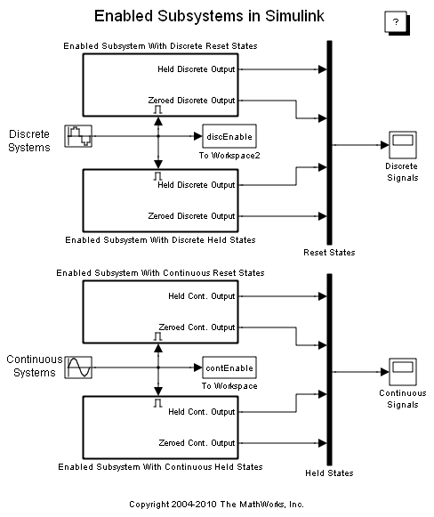
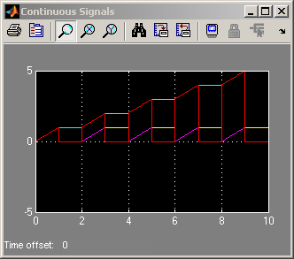
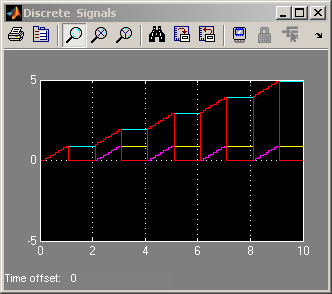

高度な Enabled Subsystem
このデモでは、Enabled Subsystem に正弦波が入力されるとどのようになるのかを説明します。このモデルでは 4 つの Subsystem に、Subsystem 名に示されているように離散または連続のいずれかの積分器が含まれています。シミュレーションの実行後、2 つのスコープに、離散 Enabled Subsystem についての結果 (上のスコープ) と、連続 Enabled Subsystem についての結果 (下のスコープ) が表示されます。
各スコープには、Enabled Subsystem が無効になったときに、その Enabled Subsystem の状態または出力が保持またはリセットされる組み合わせすべての出力が表示されます。スコープに表示される色は、次の状態および出力の設定に対応しています。
黄:状態のリセット、出力の保持
紫:状態のリセット、出力のリセット
シアン:状態の保持、出力の保持
赤:状態の保持、出力のリセット
  